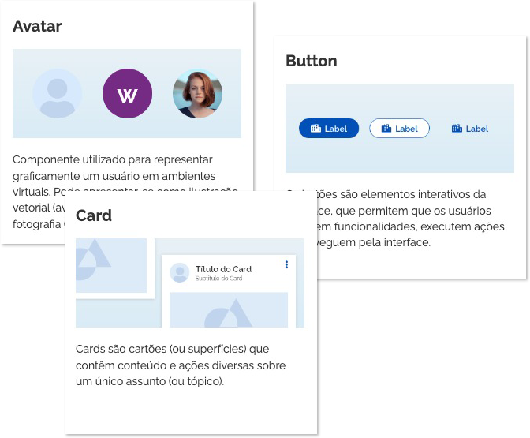

<style>
	body {
		overflow-x: hidden !important;
	}

	section {
		min-height: 400px;
	}

	.version {
		color: var(--orange-vivid-50);
	}

	.block-introducao {
		background: url(imagens/introducao-2.png) no-repeat right -10px;
	}

	.block-navegacao {
		background: url(imagens/navegacao-2.png) no-repeat left center;
	}

	.block-tutorial-1 {
		background: url(imagens/tutorial-bg-1.png) no-repeat left center;
	}

	.block-tutorial-2 {
		min-height: 400px;
		background: url(imagens/tutorial-bg-2.png) no-repeat right center;
	}

	.block-correcoes {
		min-height: 400px;
		background: url(imagens/correcoes.png) repeat-x left 120px;
	}

	.block-img {
		display: flex;
	}

	.block-img img {
		width: 100%;
		align-self: flex-end;
	}

	/* BACKGROUNDS */
	.bg-gradient-gray {
		background-image: linear-gradient(var(--pure-0), var(--gray-cool-5));
	}

	.bg-gradient-blue-vivid {
		background-image: linear-gradient(var(--blue-vivid-5), var(--pure-0));
	}

	.bg-gradient-mint-cool {
		background-image: linear-gradient(to bottom right,
				var(--pure-0),
				var(--mint-cool-5));
	}

	.bg-gradient-cyan-vivid {
		background: linear-gradient(to right,
				var(--cyan-vivid-20),
				var(--cyan-vivid-5),
				var(--pure-0));
	}

	.bg-gradient-indigo-cool-vivid {
		background-image: linear-gradient(var(--indigo-cool-vivid-5),
				var(--pure-0));
	}

	.bg-gradient-gold-vivid {
		background-image: linear-gradient(to bottom right,
				var(--gold-vivid-10),
				var(--pure-0));
	}

	/* ///// */
	@media (max-width: 992px) {

		section,
		section.text-right {
			text-align: center !important;
		}

		.block-img {
			display: block;
		}

		.block-img img {
			width: 50%;
			margin-bottom: 40px;
		}

		.block img {
			margin-bottom: 40px;
		}

		.block-first {
			order: 1;
			margin: 0 auto;
		}

		.block-end,
		.block-end-dev {
			order: 2;
		}

		.block-introducao,
		.block-navegacao {
			background: none;
		}
	}

	@media (max-width: 576px) {
		.block-tutorial-1 {
			background: url(imagens/tutorial-bg-1.png) no-repeat -180px center;
		}

		.block-tutorial-2 {
			background: url(imagens/tutorial-bg-2.png) no-repeat 130px center;
		}

		.block-img img {
			width: 90%;
		}
	}
</style>

<!-- INTRODUÇÃO -->
<section class="block bg-gradient-gray mx-n2 mx-sm-n6">
	<div class="block-introducao row">
		<div class="col-md-4 block-img">
			
		</div>
		<div class="col-md-8 px-2 py-5 px-md-5 py-md-5 px-lg-8x py-lg-8x">
			<h1 class="text-up-05 text-sm-up-06 text-weight-light text-sm-weight-light mb-6">
				O que há de novo?
			</h1>
			<p class="version text-up-04 text-sm-up-05 text-weight-bold">
				Versão 3
			</p>
			<p class="text-up-02 text-sm-up-03 text-weight-semi-bold mb-6">
				Diretrizes de acessibilidade, telas de introdução, padrões para Writing e Microcopy,  
				além outras melhorias que vão facilitar o desenvolvimento do seu projeto.
			</p>
			<p class="text-up-01 text-sm-up-02 text-weight-regular">
				Confira abaixo os destaques desta nova versão.
			</p>
		</div>
	</div>
</section>

<!-- DIRETRIZES DE ACESSIBILIDADE -->
<section class="block text-right bg-gradient-cyan-vivid mx-n2 mx-sm-n6 px-2 py-5 px-md-5 py-md-5 px-lg-8x py-lg-8x">
	<div class="row">
		<div class="col-md-8 block-end">
			<h1 class="text-up-05 text-sm-up-06 text-weight-light text-sm-weight-light mb-6 mt-md-6x mt-lg-8x">
				Diretrizes de Acessibilidade
			</h1>
			<p class="text-up-01 text-sm-up-02 text-weight-regular">
				Estamos dando um passo importante em direção a tornar nossos produtos mais acessíveis e inclusivos.
				As orientações gerais e as novas diretrizes de acessibilidade irão ajudar nossos times a criar
				interfaces e
				experiências digitais mais acessíveis.
			</p>
			<a class="br-button block d-inline-flex auto-sm secondary mb-5" href="/ds/acessibilidade">
				<i class="fas fa-universal-access mr-1" aria-hidden="true"></i>
				Sobre Acessibilidade
			</a>
		</div>
		<div class="col-md-4 block-first">
			
		</div>
	</div>
</section>

<!-- TELAS DE INTRODUÇÃO -->
<section class="block bg-gradient-mint-cool mx-n2 mx-sm-n6 px-2 py-5 px-md-5 py-md-5 px-lg-8x py-lg-8x">
	<div class="row">
		<div class="col-md-6">
			
		</div>
		<div class="col-md-6">
			<h1 class="text-up-05 text-sm-up-06 text-weight-light text-sm-weight-light mb-6 mt-md-6x mt-lg-8x">
				Telas de Introdução
			</h1>
			<p class="text-up-01 text-sm-up-02 text-weight-regular">
				Com o objetivo de tornar a navegação mais fácil e intuitiva, criamos páginas de introdução para cada seção do site, 
				permitindo que os usuários encontrem o conteúdo mais rapidamente.
			</p>
			<a class="br-button block d-inline-flex auto-sm secondary mb-5" href="/ds/components/visao-geral">
				Introdução dos Componentes
			</a>
		</div>
	</div>
</section>

<!-- UX WRITING -->
<section
	class="block text-center bg-gradient-indigo-cool-vivid mx-n2 mx-sm-n6 px-2 py-5 px-md-5 py-md-5 px-lg-8x py-lg-8x">
	<div class="row">
		<div class="col-md-6 block-end">
			<h1 class="text-up-05 text-sm-up-06 text-weight-light text-sm-weight-light mb-6 mt-md-6x mt-lg-8x">
				Padrão para UX Writing
			</h1>
			<p class="text-up-01 text-sm-up-02 text-weight-regular">
				Writing é tudo aquilo que é escrito para garantir a melhor experiência para o usuário de um produto
				digital. Confira as orientações sobre writing e aprimore a forma de escrever em seus produtos. 
			</p>
			<a class="br-button block d-inline-flex auto-sm secondary mb-5" href="/ds/padroes/writing/principios-writing">
				Princípios de UX Writing
			</a>
		</div>
		<div class="col-md-6 pt-6 block-first">
			
		</div>
	</div>
</section>


<!-- ROTEIRO -->
<section class="block text-right bg-gradient-cyan-vivid mx-n2 mx-sm-n6 px-2 py-5 px-md-5 py-md-5 px-lg-8x py-lg-8x">
	<div class="row">
		<div class="col-md-8 block-end-dev">
			<h1 class="text-up-05 text-sm-up-06 text-weight-light text-sm-weight-light mb-6 mt-md-6x mt-lg-8x">
				Roteiro de Uso do Design System
			</h1>
			<p class="text-up-01 text-sm-up-02 text-weight-regular">
				Elaboramos um passo a passo na Wiki para simplificar
				<br />
				a implementação de layouts pelos desenvolvedores.
			</p>
			<a class="br-button block d-inline-flex auto-sm secondary mb-5"
				href="https://gov.br/ds/wiki/desenvolvimento/guias/roteiro/" target="_blank">
				<i class="fas fa-code mr-1" aria-hidden="true"></i>
				Confira o Roteiro
			</a>
		</div>
		<div class="col-md-4 block-first">
			
		</div>
	</div>
</section>

<!-- CORREÇÕES -->
<section class="block text-center bg-gradient-indigo-cool-vivid mx-n2 mx-sm-n6">
	<div class="row">
		<div class="block-correcoes col-12 px-2 py-5 px-md-5 py-md-5 px-lg-8x py-lg-8x">
			<h1 class="text-up-05 text-sm-up-06 text-weight-light text-sm-weight-light mb-6 mt-md-2 mt-lg-2">
				Correções e Melhorias Gerais
			</h1>
			<p class="text-up-01 text-sm-up-02 text-weight-regular">
				Realizamos várias correções em nossas documentações e
				componentes tornando-os mais fáceis de usar;<br />
				Passamos a adotar ferramenta JSDOCs para documentação dos
				arquivos javascripts.<br /><br />
				Confira em detalhes tudo o que mudou:
			</p>
			<a class="br-button block d-inline-flex auto-sm secondary mb-5" href="/ds/release-notes">
				<i class="fas fa-list mr-1" aria-hidden="true"></i>
				Release Notes
			</a>
		</div>
	</div>
</section>